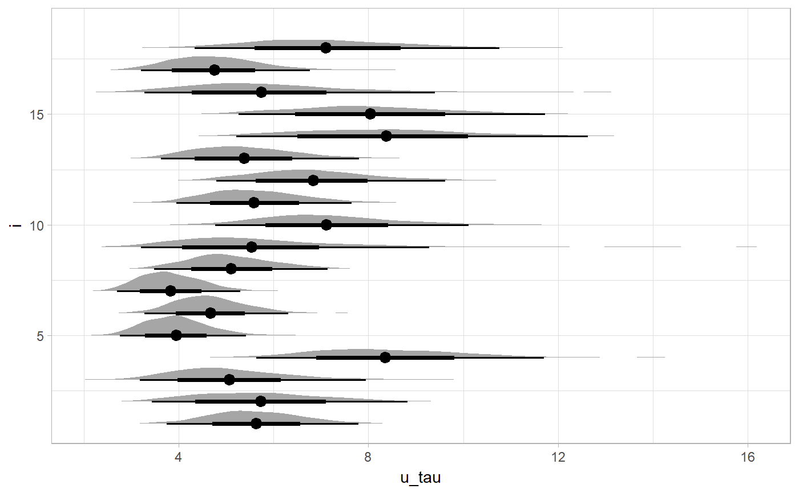

R/geom_halfeyeh.R
geom_halfeyeh.RdGenerates a combination geom_density_ridges and geom_pointrangeh (using stat_summaryh) representing the density, point estimates, and credible interval. Useful for representing posterior estimates from Bayesian samplers; in that context the mirrored verison is variously called an eye plot, a raindrop plot, or a violin plot; hence "half-eye" for this plot.
geom_halfeyeh(mapping = NULL, data = NULL, position = "identity", trim = TRUE, scale = "area", relative_scale = 1, fill = NULL, density.color = NA, ..., point_interval = median_qi, fun.data = NULL, fun.args = list(), .prob = c(0.66, 0.95), color = NULL, size = NULL, size_domain = NULL, size_range = NULL, fatten_point = NULL)
| mapping | The aesthetic mapping, usually constructed with
|
|---|---|
| data | A layer specific dataset - only needed if you want to override the plot defaults. |
| position | Passed to |
| trim | If |
| scale | If "area" (default), all densities have the same area (before trimming the tails). If "count", areas are scaled proportionally to the number of observations. If "width", all densities have the same maximum width/height. |
| relative_scale | A relative scaling factor to determine how much of the available
space densities are scaled to fill: if |
| fill | Fill color of the density. |
| density.color | Outline color of the density.
The default, |
| ... | Currently unused. |
| point_interval | A function that when given a vector should
return a data frame with variables |
| fun.data | Similar to |
| fun.args | Optional arguments passed to |
| .prob | The |
| color | Passed to |
| size | Passed to |
| size_domain | The minimum and maximum of the values of the size aesthetic that will be translated into actual
sizes drawn according to |
| size_range | This geom scales the raw size aesthetic values, as they tend to be too thick when using the default
settings of |
| fatten_point | A multiplicative factor used to adjust the size of the point relative to the size of the thickest line. |
A half-eye plot is a compact visual summary of the distribution of some samples,
used (under various names and with subtle variations) to visualize posterior
distributions in Bayesian inference. This instantiation is a combination of
a density plot, point estimate, and credible interval. geom_halfeyeh() is
equivalent to geom_density_ridges() + stat_summaryh() with some reasonable
defaults, including color choices and the use of median with 95% and 66% quantile
intervals.
See geom_eye and geom_eyeh for the mirrored-density
(full "eye") versions. See geom_density_ridges and stat_summaryh for the geoms
this function is based on.
library(magrittr) library(ggplot2) data(RankCorr, package = "tidybayes") RankCorr %>% spread_samples(u_tau[i]) %>% ggplot(aes(y = i, x = u_tau)) + geom_halfeyeh()